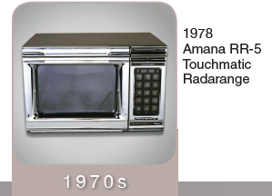
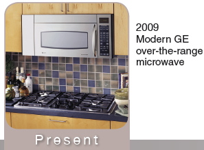

“The interlock switches are a very important safety feature. Many people have ‘outsmarted‘ other appliances and are able to use them even when it‘s unsafe, like rigging the lid switch on a washing machine so you can see where your load is out of balance while it’s spinning. This will not happen with a microwave, no siree, bub! With our interlock switches, if they are not all in the right position, we WILL NOT start. Period. Many manufacturers have added a light switch to the set of interlock switches so when the door is opened the light will come on. We can have as few as two, or as many as five or six interlock switches per model, and you can find them where the door closes up against the frame of the cavity. The hooks of the door latch are what activate the interlock switches as the door closes, so if my door latch happens to be broken, I will not be able to start.”
“The power control board has replaced the old mechanical timer, like my grandpa and even my dad had. That‘s why they‘re called the “old-timers.” By replacing the mechanical timer with a power control board we have added another part, the touchpad or membrane switch. The touchpad is the part that you actually touch, which sends a signal back to the power control board through a computer ribbon. Mechanical timers were only used for selecting the amount of time you wanted the microwave to run, and back then there were separate switches for the “power level” or amount of time the magnetron stayed on. Today’s power control board does it all.”
“The stirrer is being phased out on new microwaves, my kids may never even know what one is. That is, when I have kids. On the older models the stirrer was used to move the radio waves around inside the cavity giving a more even cooking area. Now the magnetron sends the radio waves directly into the cavity, and the stirrer has been replaced with the turntable and a waveguide cover. On older models that still use stirrers, you will find that they have stirrer covers as well. When the ‘old-timers‘ get really old, those stirrer covers sometimes fall out when they talk. It‘s totally gross!”
“The glass tray used to be a flat tray that covered the entire floor of the cavity, and did not spin. As we progressed, our manufacturers started offering the options of the flat glass tray or the turntable glass tray; and some microwaves had both. I dated this Hotpoint once who had both and… Well anyway, most microwaves nowadays have the turntable style glass tray. You‘d be surprised how many customers break them by placing them under cool running water when something has spilled on them. Of course dropping them seems to be a common method of destroying glass trays too!”
“The basic technology of the microwave has remained relatively unchanged since Dr. Spencer‘s first design back in the 1940‘s, even though all the parts have gotten much smaller. There are some exciting features being added to the newer models though. Many have sensor cooking technology, so you don‘t need to know how long to cook that popcorn, we‘ll figure it out for you! Some even have TV screens built in, and I heard a rumor about a portable microwave coming out soon that can easily be carried around and plugged in anywhere. It will be interesting to see all the new features that will be available to my kids and grand kids that we never even imagined growing up!”
“Well, that‘s all for me today. I am leaving you with more diagrams along with some instructions for reading them. I heard you get to learn about electric ranges next… talk about a heated conversation! There has been some jealousy between us over the years, but most of us have found a way to get along. There are even some frozen foods nowadays that give combination directions for heating in the microwave and the oven, so everybody‘s happy!”